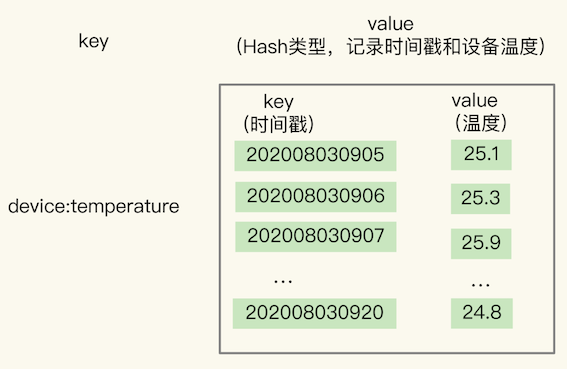
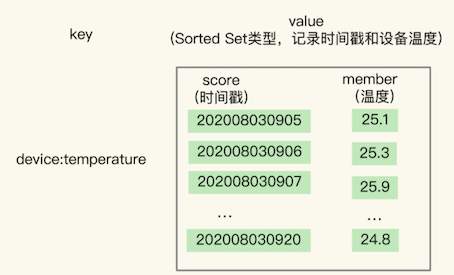
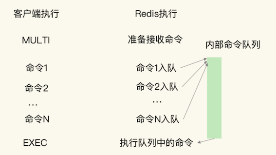

第四节 根据时间序列数据的特点，选择合适的存储方案
记录用户在网站或者 App 上的点击行为数据，来分析用户行为。这里的数据一般包括用户 ID、行为类型（例如浏览、登录、下单等）、行为发生的时间戳：
UserID, Type, TimeStamp
物联网项目的数据存取需求，和这个很相似。我们需要周期性地统计近万台设备的实时状态，包括设备 ID、压力、温度、湿度，以及对应的时间戳：
DeviceID, Pressure, Temperature, Humidity, TimeStamp
时间序列数据: 这些数据的特点是没有严格的关系模型，记录的信息可以表示成键和值的关系（例如，一个设备 ID 对应一条记录），所以，并不需要专门用关系型数据库（例如 MySQL）来保存。
1、时间序列数据的读写特点
1-1 写入特点
在实际应用中，时间序列数据通常是持续高并发写入的，例如，需要连续记录数万个设备的实时状态值。
同时，时间序列数据的写入主要就是插入新数据，而不是更新一个已存在的数据，也就是说，一个时间序列数据被记录后通常就不会变了，因为它就代表了一个设备在某个时刻的状态值
这种数据的写入特点很简单，就是插入数据快，这就要求我们选择的数据类型，在进行数据插入时，复杂度要低，尽量不要阻塞
你可能第一时间会想到用 Redis 的 String、Hash 类型来保存，因为它们的插入复杂度都是 O(1)，是个不错的选择。但是，String 类型在记录小数据时（例如刚才例子中的设备温度值），元数据的内存开销比较大，不太适合保存大量数据。
1-2 “读”操作特点
我们在查询时间序列数据时，既有对单条记录的查询（例如查询某个设备在某一个时刻的运行状态信息，对应的就是这个设备的一条记录），也有对某个时间范围内的数据的查询（例如每天早上 8 点到 10 点的所有设备的状态信息）。
还有一些更复杂的查询，比如对某个时间范围内的数据做聚合计算。这里的聚合计算，就是对符合查询条件的所有数据做计算，包括计算均值、最大 / 最小值、求和等
例如，我们要计算某个时间段内的设备压力的最大值，来判断是否有故障发生。
时间序列数据读的特点：范围查询，聚合统计，查询快 两种解决方案：
1、基于Hash和Sorted Set保存时间序列数据
2、基于RedisTimeSeries模块实现
1-3 读写特点
针对时间序列数据的“写要快”，Redis 的高性能写特性直接就可以满足了；
而针对“查询模式多”，也就是要支持单点查询、范围查询和聚合计算，Redis 提供了保存时间序列数据的两种方案，分别可以基于 Hash 和 Sorted Set 实现，以及基于 RedisTimeSeries 模块实现。
2、基于 Hash 和 Sorted Set 保存时间序列数据
Hash 和 Sorted Set 组合的方式有一个明显的好处：它们是 Redis 内在的数据类型，代码成熟和性能稳定。
为什么保存时间序列数据，要同时使用这两种类型？这是我们要回答的第一个问题。
2-1 Hash 类型保存时间序列
关于 Hash 类型，我们都知道，它有一个特点是，可以实现对单键的快速查询。这就满足了时间序列数据的单键查询需求。我们可以把时间戳作为 Hash 集合的 key，把记录的设备状态值作为 Hash 集合的 value。
Hash 集合记录设备的温度值的示意图：

当我们想要查询某个时间点或者是多个时间点上的温度数据时，直接使用 HGET 命令或者 HMGET 命令，就可以分别获得 Hash 集合中的一个 key 和多个 key 的 value 值了。
举个例子。我们用 HGET 命令查询 202008030905 这个时刻的温度值，使用 HMGET 查询 202008030905、202008030907、202008030908 这三个时刻的温度值，如下所示：
HGET device:temperature 202008030905
"25.1"
HMGET device:temperature 202008030905 202008030907 202008030908
1) "25.1"
2) "25.9"
3) "24.9"
Hash 类型有个短板：它并不支持对数据进行范围查询。
虽然时间序列数据是按时间递增顺序插入 Hash 集合中的，但 Hash 类型的底层结构是哈希表，并没有对数据进行有序索引。
所以，如果要对 Hash 类型进行范围查询的话，就需要扫描 Hash 集合中的所有数据，再把这些数据取回到客户端进行排序，然后，才能在客户端得到所查询范围内的数据。显然，查询效率很低。
2-2 Sorted Set 来保存时间序列
为了能同时支持按时间戳范围的查询，可以用 Sorted Set 来保存时间序列数据，因为它能够根据元素的权重分数来排序。
我们可以把时间戳作为 Sorted Set 集合的元素分数，把时间点上记录的数据作为元素本身。
下图显示了用 Sorted Set 集合保存的结果。

使用 Sorted Set 保存数据后，我们就可以使用 ZRANGEBYSCORE 命令，按照输入的最大时间戳和最小时间戳来查询这个时间范围内的温度值了。如下所示，我们来查询一下在 2020 年 8 月 3 日 9 点 7 分到 9 点 10 分间的所有温度值：
ZRANGEBYSCORE device:temperature 202008030907 202008030910
1) "25.9"
2) "24.9"
3) "25.3"
4) "25.2"
同时使用 Hash 和 Sorted Set，可以满足单个时间点和一个时间范围内的数据查询需求了，但是我们又会面临一个新的问题，也就是我们要解答的第二个问题：如何保证写入 Hash 和 Sorted Set 是一个原子性的操作呢？
2-3 原子性的操作
执行多个写命令操作时（例如用 HSET 命令和 ZADD 命令分别把数据写入 Hash 和 Sorted Set），这些命令操作要么全部完成，要么都不完成。
只有保证了写操作的原子性，才能保证同一个时间序列数据，在 Hash 和 Sorted Set 中，要么都保存了，要么都没保存。否则，就可能出现 Hash 集合中有时间序列数据，而 Sorted Set 中没有，那么，在进行范围查询时，就没有办法满足查询需求了。
那 Redis 是怎么保证原子性操作的呢？
这里就涉及到了 Redis 用来实现简单的事务的 MULTI 和 EXEC 命令。当多个命令及其参数本身无误时，MULTI 和 EXEC 命令可以保证执行这些命令时的原子性。
MULTI命令：表示一系列原子性操作的开始。收到这个命令后，Redis 就知道，接下来再收到的命令需要放到一个内部队列中，后续一起执行，保证原子性。EXEC命令：表示一系列原子性操作的结束。 一旦 Redis 收到了这个命令，就表示所有要保证原子性的命令操作都已经发送完成了。此时，Redis 开始执行刚才放到内部队列中的所有命令操作。
命令 1 到命令 N 是在 MULTI 命令后、EXEC 命令前发送的，它们会被一起执行，保证原子性。

以保存设备状态信息的需求为例，我们执行下面的代码，把设备在 2020 年 8 月 3 日 9 时 5 分的温度，分别用 HSET 命令和 ZADD 命令写入 Hash 集合和 Sorted Set 集合。
127.0.0.1:6379> MULTI
OK
127.0.0.1:6379> HSET device:temperature 202008030911 26.8
QUEUED
127.0.0.1:6379> ZADD device:temperature 202008030911 26.8
QUEUED
127.0.0.1:6379> EXEC
1) (integer) 1
2) (integer) 1
- 首先，Redis 收到了客户端执行的 MULTI 命令。
- 然后，客户端再执行
HSET和ZADD命令后，Redis返回的结果为“QUEUED”，表示这两个命令暂时入队，先不执行； - 执行了
EXEC命令后，HSET命令和ZADD命令才真正执行，并返回成功结果（结果值为 1）。
3、如何对时间序列数据进行聚合计算？
3-1 聚合计算
聚合计算一般被用来周期性地统计时间窗口内的数据汇总状态，在实时监控与预警等场景下会频繁执行。
物联网项目中，就需要每 3 分钟统计一下各个设备的温度状态，一旦设备温度超出了设定的阈值，就要进行报警。这是一个典型的聚合计算场景，我们可以来看看这个过程中的数据体量
假设我们需要每 3 分钟计算一次的所有设备各指标的最大值，每个设备每 15 秒记录一个指标值，1 分钟就会记录 4 个值，3 分钟就会有 12 个值。我们要统计的设备指标数量有 33 个，所以，单个设备每 3 分钟记录的指标数据有将近 400 个（33 * 12 = 396），而设备总数量有 1 万台，这样一来，每 3 分钟就有将近 400 万条（396 * 1 万 = 396 万）数据需要在客户端和 Redis 实例间进行传输。
为了避免客户端和 Redis 实例间频繁的大量数据传输，我们可以使用 RedisTimeSeries 来保存时间序列数据。
3-2 聚合计算
RedisTimeSeries 支持直接在 Redis 实例上进行聚合计算。
还是以刚才每 3 分钟算一次最大值为例。在 Redis 实例上直接聚合计算，那么，对于单个设备的一个指标值来说，每 3 分钟记录的 12 条数据可以聚合计算成一个值，单个设备每 3 分钟也就只有 33 个聚合值需要传输，1 万台设备也只有 33 万条数据。数据量大约是在客户端做聚合计算的十分之一，很显然，可以减少大量数据传输对 Redis 实例网络的性能影响。
所以，如果我们只需要进行单个时间点查询或是对某个时间范围查询的话，适合使用 Hash 和 Sorted Set 的组合，它们都是 Redis 的内在数据结构，性能好，稳定性高。
但是，如果我们需要进行大量的聚合计算，同时网络带宽条件不是太好时，Hash 和 Sorted Set 的组合就不太适合了。此时，使用 RedisTimeSeries 就更加合适一些。
4、基于 RedisTimeSeries 模块保存时间序列数据
RedisTimeSeries 是 Redis 的一个扩展模块。它
专门面向时间序列数据提供了数据类型和访问接口，并且支持在 Redis 实例上直接对数据进行按时间范围的聚合计算。
因为 RedisTimeSeries 不属于 Redis 的内建功能模块，在使用时，我们需要先把它的源码单独编译成动态链接库 redistimeseries.so，再使用 loadmodule 命令进行加载，如下所示：
loadmodule redistimeseries.so
当用于时间序列数据存取时，RedisTimeSeries 的操作主要有 5 个：
- 用
TS.CREATE命令创建时间序列数据集合； - 用
TS.ADD命令插入数据； - 用
TS.GET命令读取最新数据； - 用
TS.MGET命令按标签过滤查询数据集合； - 用
TS.RANGE支持聚合计算的范围查询。
下面，我来介绍一下如何使用这 5 个操作。
4-1 用 TS.CREATE 命令创建一个时间序列数据集合
在 TS.CREATE 命令中，我们需要设置时间序列数据集合的 key 和数据的过期时间（以毫秒为单位）。此外，我们还可以为数据集合设置标签，来表示数据集合的属性。
例如，我们执行下面的命令，创建一个 key 为 device:temperature、数据有效期为 600s 的时间序列数据集合。
也就是说，这个集合中的数据创建了 600s 后，就会被自动删除。
最后，我们给这个集合设置了一个标签属性{device_id:1}，表明这个数据集合中记录的是属于设备 ID 号为 1 的数据。
TS.CREATE device:temperature RETENTION 600000 LABELS device_id 1
OK
4-2 用 TS.ADD 命令插入数据，用 TS.GET 命令读取最新数据
- 我们可以用
TS.ADD命令往时间序列集合中插入数据，包括时间戳和具体的数值， - 并使用
TS.GET命令读取数据集合中的最新一条数据。
例如，我们执行下列 TS.ADD 命令时，就往 device:temperature 集合中插入了一条数据，记录的是设备在 2020 年 8 月 3 日 9 时 5 分的设备温度；
再执行 TS.GET 命令时，就会把刚刚插入的最新数据读取出来
TS.ADD device:temperature 1596416700 25.1
1596416700
TS.GET device:temperature
25.1
4-3 用 TS.MGET 命令按标签过滤查询数据集合
在保存多个设备的时间序列数据时，我们通常会把不同设备的数据保存到不同集合中。
- 此时，我们就可以使用
TS.MGET命令，按照标签查询部分集合中的最新数据。 - 在使用
TS.CREATE创建数据集合时，我们可以给集合设置标签属性。
当我们进行查询时，就可以在查询条件中对集合标签属性进行匹配，最后的查询结果里只返回匹配上的集合中的最新数据。
举个例子。假设我们一共用 4 个集合为 4 个设备保存时间序列数据，设备的 ID 号是 1、2、3、4，我们在创建数据集合时，把 device_id 设置为每个集合的标签。
此时，我们就可以使用下列 TS.MGET 命令，以及 FILTER 设置（这个配置项用来设置集合标签的过滤条件），查询 device_id 不等于2 的所有其他设备的数据集合，并返回各自集合中的最新的一条数据。
TS.MGET FILTER device_id!=2
1) 1) "device:temperature:1"
2) (empty list or set)
3) 1) (integer) 1596417000
2) "25.3"
2) 1) "device:temperature:3"
2) (empty list or set)
3) 1) (integer) 1596417000
2) "29.5"
3) 1) "device:temperature:4"
2) (empty list or set)
3) 1) (integer) 1596417000
2) "30.1"
4-4 用 TS.RANGE 支持需要聚合计算的范围查询
最后，在对时间序列数据进行聚合计算时，我们可以使用 TS.RANGE 命令指定要查询的数据的时间范围，同时用 AGGREGATION 参数指定要执行的聚合计算类型。
RedisTimeSeries 支持的聚合计算类型很丰富，包括求均值（avg）、求最大 / 最小值（max/min），求和（sum）等。
例如，在执行下列命令时，我们就可以按照每 180s 的时间窗口，对 2020 年 8 月 3 日 9 时 5 分和 2020 年 8 月 3 日 9 时 12 分这段时间内的数据进行均值计算了。
TS.RANGE device:temperature 1596416700 1596417120 AGGREGATION avg 180000
1) 1) (integer) 1596416700
2) "25.6"
2) 1) (integer) 1596416880
2) "25.8"
3) 1) (integer) 1596417060
2) "26.1"
与使用 Hash 和 Sorted Set 来保存时间序列数据相比，RedisTimeSeries 是专门为时间序列数据访问设计的扩展模块，能支持在 Redis 实例上直接进行聚合计算，以及按标签属性过滤查询数据集合，当我们需要频繁进行聚合计算，以及从大量集合中筛选出特定设备或用户的数据集合时，RedisTimeSeries 就可以发挥优势了。
5、本节小结
- 点查询，根据一个时间戳，查询相应时间的数据；
- 范围查询，查询起始和截止时间戳范围内的数据；
- 聚合计算，针对起始和截止时间戳范围内的所有数据进行计算，例如求最大 / 最小值，求均值等。
Redis 的高性能写特性足以应对了；而针对多样化的查询需求，Redis 提供了两种方案。
第一种方案是，组合使用 Redis 内置的 Hash 和 Sorted Set 类型，把数据同时保存在 Hash 集合和 Sorted Set 集合中。
这种方案既可以利用 Hash 类型实现对单键的快速查询，还能利用 Sorted Set 实现对范围查询的高效支持，一下子满足了时间序列数据的两大查询需求。
第一种方案也有两个不足
- 在执行聚合计算时，我们需要把数据读取到客户端再进行聚合，当有大量数据要聚合时，数据传输开销大；
- 所有的数据会在两个数据类型中各保存一份，内存开销不小。不过，我们可以通过设置适当的数据过期时间，释放内存，减小内存压力。
RedisTimeSeries 模块
这是专门为存取时间序列数据而设计的扩展模块。和第一种方案相比，RedisTimeSeries能支持直接在 Redis 实例上进行多种数据聚合计算，避免了大量数据在实例和客户端间传输。
不过，RedisTimeSeries 的底层数据结构使用了链表，它的范围查询的复杂度是 O(N) 级别的，同时，它的 TS.GET 查询只能返回最新的数据，没有办法像第一种方案的 Hash 类型一样，可以返回任一时间点的数据。
组合使用 Hash 和 Sorted Set，或者使用 RedisTimeSeries，在支持时间序列数据存取上各有优劣势
- 如果你的部署环境中网络带宽高、Redis 实例内存大，可以优先考虑第一种方案；
- 如果你的部署环境中网络、内存资源有限，而且数据量大，聚合计算频繁，需要按数据集合属性查询，可以优先考虑第二种方案。
hash和sorted set类型的key不能相同，文件是相同的。
127.0.0.1:6379> MULTI
OK
127.0.0.1:6379> ZADD dev:temp4 2020092201 26.8
QUEUED
127.0.0.1:6379> HSET dev:temp4 2020092201 26.8
QUEUED
127.0.0.1:6379> EXEC
1) (integer) 1
2) (error) WRONGTYPE Operation against a key holding the wrong kind of value
127.0.0.1:6379> MULTI
OK
127.0.0.1:6379> HSET dev:temp5 2020092201 26.8
QUEUED
127.0.0.1:6379> ZADD dev:temp6 2020092201 26.8
QUEUED
127.0.0.1:6379> EXEC
1) (integer) 1
2) (integer) 1
使用 Sorted Set 保存时间序列数据，把时间戳作为 score，把实际的数据作为 member，你觉得这样保存数据有没有潜在的风险？另外，如果你是 Redis 的开发维护者，你会把聚合计算也设计为 Sorted Set 的一个内在功能吗？
存在member重复的问题，会对member覆盖